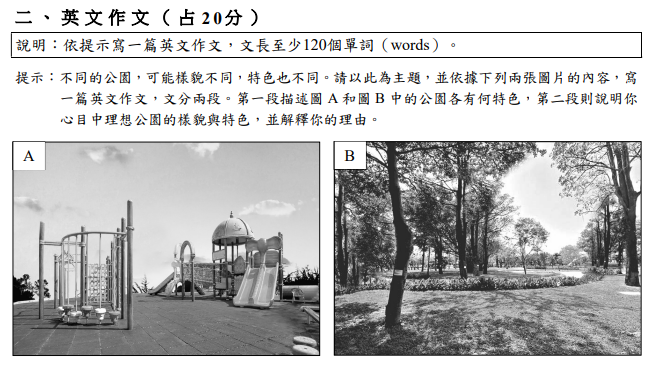

選一篇作文，練七個步驟
從轉折詞，到能直接套用的長句
先查 13 類詳細句型表，再用下方的 10 類互動卡練習替換。第一、第二點有完整長句，最後一點使用 Last but not least。
原有 10 類互動練習卡｜點詞語看中英例句
1. 對比兩件事 核心
Picture A has playground equipment, whereas Picture B has trees and a lawn.
圖 A 有遊樂設施，而圖 B 有樹木與草地。提醒：On the contrary 用來反駁前一句，不等於一般的「另一方面」。
2. 安排理由順序 核心
To begin with, one important reason is that a natural park helps me relax after school.
首先，一個重要的理由是，自然公園能幫助我在放學後放鬆。3. 補充另一個想法 核心
In addition, the lawn gives my family a place to spend time together.
此外，草地提供讓家人相處的空間。4. 舉出具體例子 核心
For example, I can walk under the trees after a stressful day.
例如，在充滿壓力的一天後，我可以在樹下散步。5. 說明原因與結果 核心
The park is quiet, so visitors can take a break from city noise.
公園很安靜，所以遊客能暫時遠離城市噪音。提醒：Because 和 so 通常不要同時放在同一個英文句子裡。
6. 完成結尾 核心
All in all, a green and peaceful park would be my ideal choice.
整體而言，綠意盎然又寧靜的公園會是我的理想選擇。7. 表達個人觀點 挑戰
From my perspective, a park with trees and open space would meet my needs.
依我看，有樹木與開放空間的公園能符合我的需要。8. 承認另一面再轉回來 挑戰
Although playgrounds are exciting, natural parks are more relaxing.
雖然遊樂場令人興奮，但自然公園更能讓人放鬆。提醒：Although 是讓步，不是條件；後面不能再直接接 but。
9. 提出條件或假設 挑戰
If the park has a large lawn, my family can have a picnic there.
如果公園有一大片草地，我的家人就能在那裡野餐。10. 說明行動目的 挑戰
I walk under the trees to take a break from schoolwork.
我在樹下散步，讓自己暫時從功課中休息一下。換一題，自己寫
選一題，直接寫兩段英文。卡住時可以展開提示，寫完再打開範文對照。
查看公園題圖片
